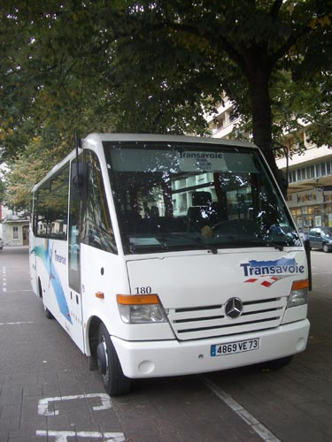
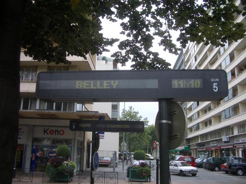
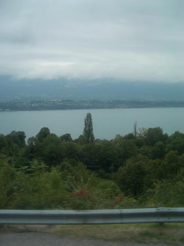
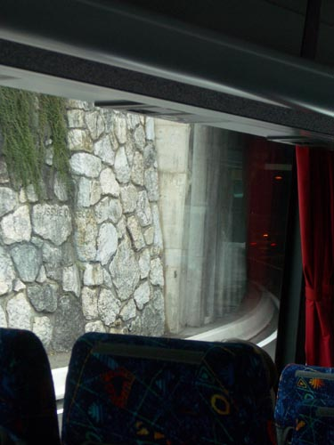
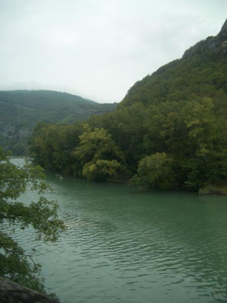
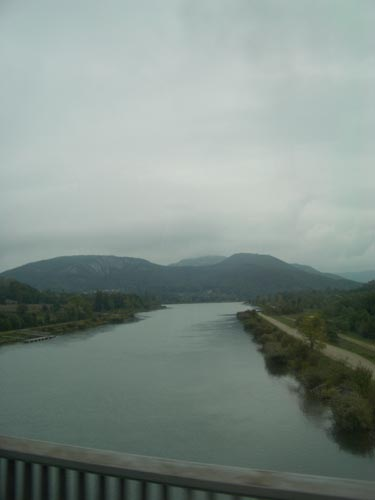

| bus to Belley | ||
|
start from Chambréy bus station - it's in Avenue de la Boisse - turn left as you leave the railway station - cross the road - after a few minutes you should see it in front of you  there's only one bus you can take to Belley - the number 27 - it leaves the Gare Routiere at 11.10 - arriving at Belley via Yenne at 12:00 - this will give you a little over five hours until 17:15 when you take the bus back to Chambréy  the bus will leave you off on Boulevard du Mail - infront of the police station - walk up the street a short distance and cross the road - you will see at the end of a short street - Rue du Palais - the Office de Tourisme sit on the right because after leaving Chambréy the bus climbs the side of the Mont du Chat - giving you a view over the Lac du Bourget  suddenly the bus turns to the left and enters the Tunnel du Chat - this tunnel used to give Alice the creeps apparently - water dripping from the roof into the open car  I have taken to love a tunnel the one they have made between us and Aix and a long tunnel it is and xciting once out the other side - the road winds down through fields and trees to the little town of Yenne - which you barely see because the bus simpley stops momentarily in a parking lot before it continues on to Belley  just outside Yenne we run alongside the Rhone for a while - the Rhone actually has split a bit further upstream - after crossing it here we encounter it again just as we are approaching Belley  looking north you can see in the distance the Grand Colombier - the mountain that sits behind Culoz after you have crossed the Rhone for the second time the bus climbs up into the town of Belley - and stops on the Boulevard de Mail - just outside the Palais de Justice and the police station |
||